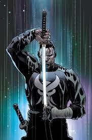

The Punisher es un personaje ficticio de Marvel Comics. Se trata de un ex marine que lucha contra el crimen despues de que su familia fuera asesinada. Frank Castle, tambien conocido como The Punisher, es conocido por su actitud implacable y su uso de la violencia para lograr sus objetivos.
The Punisher ha aparecido en varios comics, peliculas, y series de television. Es un personaje muy popular entre los fans de Marvel, y su historia ha sido reinterpretada y reiniciada en varias ocasiones. Sin embargo, su personalidad y su lucha contra el crimen siempre han sido constantes a lo largo de los años.